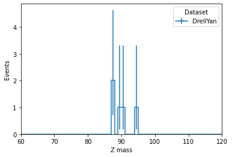

NanoEvents tutorial¶
This is a rendered copy of nanoevents.ipynb. You can optionally run it interactively on binder at this link
NanoEvents is a Coffea utility to wrap flat nTuple structures (such as the CMS NanoAOD format) into a single awkward array with appropriate object methods (such as Lorentz vector methods), cross references, and nested objects, all lazily accessed from the source ROOT TTree via uproot. The interpretation of the TTree data is configurable via schema objects, which are community-supplied interpretations for various source file types. These schema objects allow a richer interpretation of the file contents than the uproot.lazy method.
In this demo, we will use NanoEvents to read a small CMS NanoAOD sample. The events object can be instantiated as follows:
[1]:
import awkward as ak
from coffea.nanoevents import NanoEventsFactory, NanoAODSchema
fname = "https://raw.githubusercontent.com/CoffeaTeam/coffea/master/tests/samples/nano_dy.root"
events = NanoEventsFactory.from_root(fname, schemaclass=NanoAODSchema).events()
Consider looking at the from_file class method to see the optional arguments.
The events object is an awkward array, which at its top level is a record array with one record for each “collection”, where a collection is a grouping of fields (TBranches) based on the naming conventions of NanoAODSchema. For example, in the file we opened, the branches:
Generator_binvar
Generator_scalePDF
Generator_weight
Generator_x1
Generator_x2
Generator_xpdf1
Generator_xpdf2
Generator_id1
Generator_id2
are grouped into one sub-record named Generator which can be accessed using either getitem or getattr syntax, i.e. events["Generator"] or events.Generator. e.g.
[2]:
events.Generator.id1
[2]:
<Array [1, -1, -1, 21, 21, ... 2, -2, -1, 2, 1] type='40 * int32[parameters={"__...'>
[3]:
# all names can be listed with:
events.Generator.fields
[3]:
['binvar', 'id1', 'id2', 'scalePDF', 'weight', 'x1', 'x2', 'xpdf1', 'xpdf2']
In CMS NanoAOD, each TBranch has a help string, which is carried into the NanoEvents, e.g. executing the following cell should produce a help pop-up:
Type: Array
String form: [1, -1, -1, 21, 21, 4, 2, -2, 2, 1, 3, 1, ... -1, -1, 1, -2, 2, 1, 2, -2, -1, 2, 1]
Length: 40
File: ~/src/awkward-1.0/awkward1/highlevel.py
Docstring: id of first parton
Class docstring: ...
where the Docstring shows information about the content of this array.
[4]:
events.Generator.id1?
Based on a collection’s name or contents, some collections acquire additional methods, which are extra features exposed by the code in the mixin classes of the coffea.nanoevents.methods modules. For example, although events.GenJet has the fields:
[5]:
events.GenJet.fields
[5]:
['eta', 'mass', 'phi', 'pt', 'partonFlavour', 'hadronFlavour']
we can access additional attributes associated to each generated jet by virtue of the fact that they can be interpreted as Lorentz vectors:
[6]:
events.GenJet.energy
[6]:
<Array [[217, 670, 258], ... 16], [76.9]] type='40 * var * float32'>
We can call more complex methods, like computing the distance \(\Delta R = \sqrt{\Delta \eta^2 + \Delta \phi ^2}\) between two LorentzVector objects:
[7]:
# find distance between leading jet and all electrons in each event
dr = events.Jet[:, 0].delta_r(events.Electron)
dr
[7]:
<Array [[], [3.13], [3.45, ... 0.0858], [], []] type='40 * var * float32'>
[8]:
# find minimum distance
ak.min(dr, axis=1)
[8]:
<Array [None, 3.13, 2.18, ... None, None] type='40 * ?float32'>
The assignment of methods classes to collections is done inside the schema object during the initial creation of the array, governed by the awkward array’s __record__ parameter and the associated behavior. See ak.behavior for a more detailed explanation of array behaviors.
Additional methods provide convenience functions for interpreting some branches, e.g. CMS NanoAOD packs several jet identification flag bits into a single integer, jetId. By implementing the bit-twiddling in the Jet mixin, the analsyis code becomes more clear:
[9]:
print(events.Jet.jetId)
print(events.Jet.isTight)
[[6, 6, 6, 6, 6], [6, 2, 6, 6, 6, 6, 6, 0], ... 6], [6], [6, 6, 0, 6, 6, 6], [6, 6]]
[[True, True, True, True, True], [True, ... False, True, True, True], [True, True]]
We can also define convenience functions to unpack and apply some mask to a set of flags, e.g. for generated particles:
[10]:
print(f"Raw status flags: {events.GenPart.statusFlags}")
events.GenPart.hasFlags(['isPrompt', 'isLastCopy'])
Raw status flags: [[10625, 27009, 4481, 22913, 257, 257, ... 13884, 13884, 12876, 12876, 12876, 12876]]
[10]:
<Array [[True, True, False, ... False, False]] type='40 * var * bool'>
CMS NanoAOD also contains pre-computed cross-references for some types of collections. For example, there is a TBranch Electron_genPartIdx which indexes the GenPart collection per event to give the matched generated particle, and -1 if no match is found. NanoEvents transforms these indices into an awkward indexed array pointing to the collection, so that one can directly access the matched particle using getattr syntax:
[11]:
events.Electron.matched_gen.pdgId
[11]:
<Array [[], [-11], [-11, ... [None], [], []] type='40 * var * ?int32[parameters=...'>
[12]:
events.Muon.matched_jet.pt
[12]:
<Array [[], [], [], [], ... [], [], [], []] type='40 * var * ?float32[parameters...'>
For generated particles, the parent index is similarly mapped:
[13]:
events.GenPart.parent.pdgId
[13]:
<Array [[None, None, 1, 1, ... 111, 111, 111]] type='40 * var * ?int32[parameter...'>
In addition, using the parent index, a helper method computes the inverse mapping, namely, children. As such, one can find particle siblings with:
[14]:
events.GenPart.parent.children.pdgId
# notice this is a doubly-jagged array
/Users/lagray/miniconda3/envs/coffea-work/lib/python3.7/site-packages/numba/core/dispatcher.py:238: UserWarning: Numba extension module 'awkward1._connect._numba' failed to load due to 'ImportError(generic_type: type "kernel_lib" is already registered!)'.
entrypoints.init_all()
[14]:
<Array [[None, None, [23, 21, ... [22, 22]]] type='40 * var * option[var * ?int3...'>
Since often one wants to shortcut repeated particles in a decay sequence, a helper method distinctParent is also available. Here we use it to find the parent particle ID for all prompt electrons:
[15]:
events.GenPart[
(abs(events.GenPart.pdgId) == 11)
& events.GenPart.hasFlags(['isPrompt', 'isLastCopy'])
].distinctParent.pdgId
[15]:
<Array [[], [23, 23], [23, ... [23, 23], []] type='40 * var * ?int32[parameters=...'>
Events can be filtered like any other awkward array using boolean fancy-indexing
[16]:
mmevents = events[ak.num(events.Muon) == 2]
zmm = mmevents.Muon[:, 0] + mmevents.Muon[:, 1]
zmm.mass
[16]:
<Array [94.6, 87.6, 88, 90.4, 89.1, 31.6] type='6 * float32'>
One can assign new variables to the arrays, with some caveats:
Assignment must use setitem (
events["path", "to", "name"] = value)Assignment to a sliced
eventswon’t be accessible from the original variableNew variables are not visible from cross-references
[17]:
mmevents["Electron", "myvar2"] = mmevents.Electron.pt + zmm.mass
mmevents.Electron.myvar2
[17]:
<Array [[], [121], [], [], [], []] type='6 * var * float32'>
Using NanoEvents with a processor¶
NanoEvents can also be used inside a coffea processor, as shown in this simple Z peak sketch below. To use NanoEvents with run_uproot_job, pass the appropriate schema as an executor argument, e.g. "schema": NanoAODSchema for this example. The dataset name is included in the events object under the metadata attribute.
[18]:
from coffea import processor, hist
class MyZPeak(processor.ProcessorABC):
def __init__(self):
self._histo = hist.Hist(
"Events",
hist.Cat("dataset", "Dataset"),
hist.Bin("mass", "Z mass", 60, 60, 120),
)
@property
def accumulator(self):
return self._histo
# we will receive a NanoEvents instead of a coffea DataFrame
def process(self, events):
out = self.accumulator.identity()
mmevents = events[
(ak.num(events.Muon) == 2)
& (ak.sum(events.Muon.charge, axis=1) == 0)
]
zmm = mmevents.Muon[:, 0] + mmevents.Muon[:, 1]
out.fill(
dataset=events.metadata["dataset"],
mass=zmm.mass,
)
return out
def postprocess(self, accumulator):
return accumulator
[19]:
samples = {
"DrellYan": [fname]
}
result = processor.run_uproot_job(
samples,
"Events",
MyZPeak(),
processor.iterative_executor,
{"schema": NanoAODSchema},
)
[20]:
%matplotlib inline
hist.plot1d(result)
[20]:
<AxesSubplot:xlabel='Z mass', ylabel='Events'>
